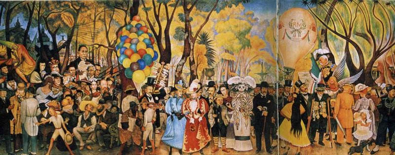
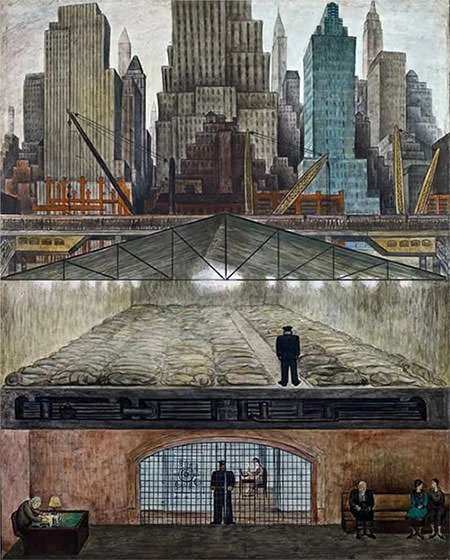
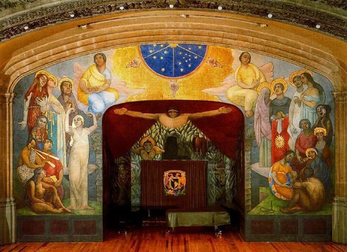
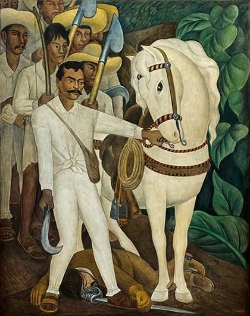
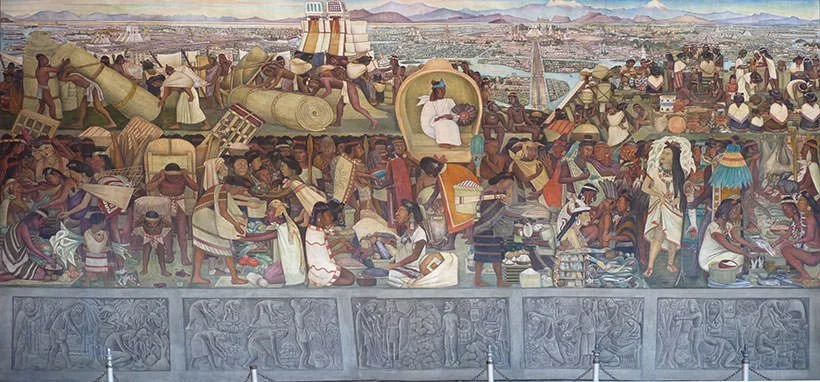
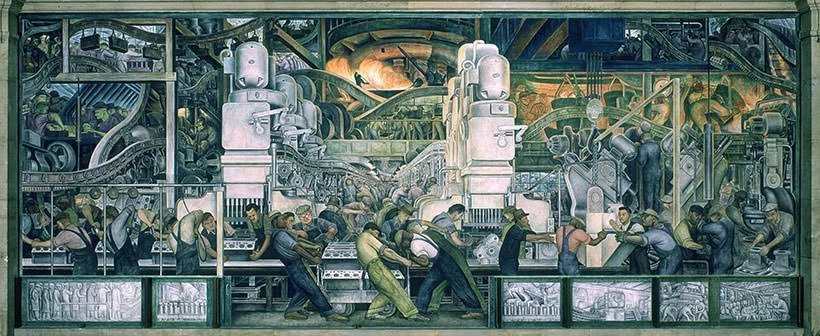
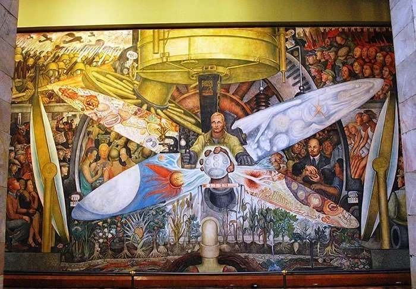

Dream of a Sunday Afternoon in Alameda Park
1947
Originally created for the Versailles restaurant at the hotel Prado, it was moved to the museum after the hotel was destroyed in the 1985 Mexico City earthquake. Alameda Central is a public municipal park in downtown Mexico City which has witnessed several important events in Mexican history
The Abundant Earth
1927
This piece was painted in the former Jesuit chapel in Chapingo, which served as the auditorium of the Escuela Nacional de Agricultura. This is one of the 41 fresco panels, tracing the development of natural growth from seed to flowering plant.

Frozen Assets
1931
The panel’s top half depicts recognizable skyscrapers while the lowest depicts a bank’s waiting room. The mural is considered a shrewd insight into the reality of New York and struck a chord among the public amid the depression..
Symbolic Landscape
1940
The painting depicts a fallen tree with a smooth bark surrounded by stones which take all kinds of shapes, and other symbolic objects. It uses a colorful natural landscape to symbolically portray the turmoil he felt after his divorce to famous Mexican artist Frida Kahlo.

Creation
1922
This piece was created over the course of a year and covers over a thousand square feet. The artwork depicts a number of allegorical figures including Faith, Hope, Charity, Education and Science.
The Flower Carrier
1935
This painting is one of the most famous depictions of the struggle of a common worker living in a capitalist society.

Agrarian Leader Zapata
1931
Emiliano Zapata was the foremost leader of the peasant revolution in the Mexican state of Morelos and among the leading figures in the Mexican Revolution. He was also the inspiration of the agrarian movement known as Zapatismo. Here we see Zapata standing over the body of a landowner.

The History of Mexico
1929
In August 1929, Rivera began painting his grand murals in the large stairways and stairwells of the National Palace, the center of the Mexican government located on Mexico City’s main square. This piece is found on the West Wall of the Palace.

Detroit Industry Murals
1932
This piece resides in the Detroit Institute of Art in Midtown Detroit, Michigan. It depicts laborers working at Ford Motor Company’s River Rouge Plant.

Man At The Crossroads
1934
This fresco was first commissioned by the Rockefellers for ground-floor wall of Rockefeller Center in New York City. However it couldn’t be completed as Rivera refused to remove a portrait of Lenin which was causing a controversy. It was subsequently destroyed and then recreated by Rivera at the Palacio de Bellas Artes in Mexico City.
Previous
Next
Ten Of Rivera's Most Famous Works
Public Art and Iconic Murals 1886 – 1957
Showcase: The Most Influential Works
The Life of Rivera
A Tumultuous Personal Life April, 25, 2019

Diego Rivera:
- Life: 1886-1957 - Career: 50 Year Span - Style: Cubism, Impressionism, Post-Impressionism